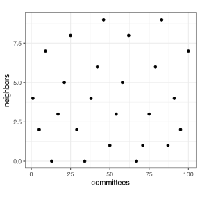
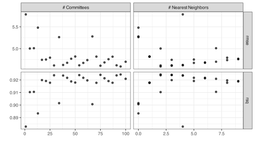
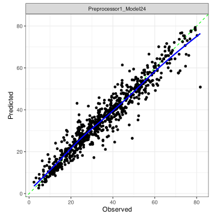
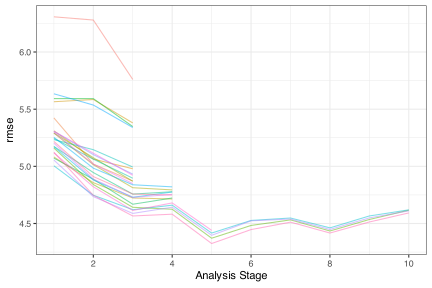

req_pkg <- c("Cubist", "finetune", "future.mirai", "rules", "tidymodels")
# Check to see if they are installed:
pkg_installed <- vapply(req_pkg, rlang::is_installed, logical(1))
# Install missing packages:
if ( any(!pkg_installed) ) {
install_list <- names(pkg_installed)[!pkg_installed]
pak::pak(install_list)
}11 Grid Search
The previous chapters have discussed how to estimate performance using resampling as well as how to tag arguments for optimization (via tune()). This page will illustrate how to use similar tools to optimize models via grid search.
11.1 Requirements
As with the previous chapter, we will use the concrete data set from the modeldata package (which is automatically loaded below) to illustrate some of the methods.
You’ll need 5 packages (Cubist, finetune, future.mirai, rules, and tidymodels) for this chapter. You can install them via:
Let’s load the meta package and manage some between-package function conflicts.
library(tidymodels)
tidymodels_prefer()
theme_set(theme_bw())11.2 Creating Grids
The dials package has several grid creation functions, whose names all start with grid_. The primary input is a dials parameter set object, which can be created from a model, recipe, or workflow. The primary functions are:
-
grid_regular()for regular grids. The argument for specifying the size of the grid is calledlevels. This can be a single number (recycled across parameters) or a vector of sizes for each tuning parameter. -
grid_random()creates random uniform parameter values. The argumentsizedictates how many candidate combinations are created. -
grid_space_filling()can produce different types of space-filling designs (via thetypeargument). It also uses asizeargument.
Let’s pick back up from the Cubist example in Section 10.11. We can tag two of the Cubist models’s parameters for tuning:
- The number of
committeemembers in the ensemble (usually ranging from one to 100). - The number of
neighborsto use in a post hoc model adjustment phase, ranging from zero neighbors (i.e., no adjustment) to nine.
Both of these parameters are described more in a blog post on “Modern Rule-Based Models”.
We need to load the rules package to enable access to the model, mark these parameters for tuning, and then extract the parameter set needed to make the grids.
library(rules)
cubist_spec <- cubist_rules(committees = tune(), neighbors = tune())
cubist_param <-
cubist_spec %>%
extract_parameter_set_dials()
cubist_param
#> Collection of 2 parameters for tuning
#>
#> identifier type object
#> committees committees nparam[+]
#> neighbors neighbors nparam[+]
#> Let’s make a uniform space-filling design with 25 candidate models:
cubist_grid <- grid_space_filling(cubist_param, size = 25)
cubist_grid %>%
ggplot(aes(committees, neighbors)) +
geom_point() +
coord_fixed(ratio = 10)
Recall from Section 9.2, we can manipulate the ranges and values of the tuning parameters in the parameter set using update().
Note that:
- If we labeled any of our parameters (e.g.,
neighbors = tune("K")), that label is used as the column name. - Some parameters are associated with a transformation, and, by default, the values are created on that scale and then transformed back to the original units when the grid is returned.
- The
sizeargument should be considered the maximum size; redundant combinations are removed. For example:
# Default range is 0L to 9L:
cubist_rules(neighbors = tune("K")) %>%
extract_parameter_set_dials() %>%
grid_space_filling(size = 50) %>%
arrange(K)
#> # A tibble: 10 × 1
#> K
#> <int>
#> 1 0
#> 2 1
#> 3 2
#> 4 3
#> 5 4
#> 6 5
#> # ℹ 4 more rowsYou can also make grid manually as long as they are in a data frame and the column names match the parameter types/labels of the parameters:
Finally, as a reminder, a workflow can contain preprocessing arguments that were tagged for optimization via tune(). These values are treated the same as model arguments when it comes to extracting the parameter set and creating grids.
11.3 Tuning Models with Grids
For grids, the three main functions are tune::tune_grid() and the two racing functions in the finetune package: finetune::tune_race_anova() and finetune::tune_race_winloss(). The syntax for these is nearly identical and also closely follows the previously described code for fit_resamples() from Section 10.11.
The primary arguments for these tuning functions in tidymodels are:
-
grid: Either a data frame or an integer value. The latter choice will trigger tidymodels to make a space-filling design for you. -
param_info: The parameter set object. This is only needed ifgridis an integer and you request nonstandard ranges/values for one or more parameters.
Other arguments, such as metrics, are the same. The control function for these functions are named differently (e.g., tune_race()).
To get started, let’s recreate the objects for the concrete data that match those from the previous chapter:
set.seed(426)
concrete_split <- initial_split(concrete, prop = 3 / 4)
concrete_tr <- training(concrete_split)
concrete_te <- testing(concrete_split)
concrete_rs <- vfold_cv(concrete_tr)We will reuse the cubist_spec and cubist_grid objects created above.
Let’s do basic grid search:
cubist_res <-
cubist_spec %>%
tune_grid(
compressive_strength ~ .,
resamples = concrete_rs,
grid = cubist_grid,
control = control_grid(save_pred = TRUE, save_workflow = TRUE)
)The option to save the workflow for our model will be references below.
This object is similar to the one produced by fit_resamples except that the .metrics and .predictions columns have more rows since their values contain the results for the 25 candidates. We have our previous functions to rely on:
collect_metrics(cubist_res)
#> # A tibble: 50 × 8
#> committees neighbors .metric .estimator mean n std_err .config
#> <int> <int> <chr> <chr> <dbl> <int> <dbl> <chr>
#> 1 1 4 rmse standard 5.785 10 0.2373 Preprocessor1_Model…
#> 2 1 4 rsq standard 0.8828 10 0.01024 Preprocessor1_Model…
#> 3 5 2 rmse standard 5.004 10 0.2625 Preprocessor1_Model…
#> 4 5 2 rsq standard 0.9103 10 0.009437 Preprocessor1_Model…
#> 5 9 7 rmse standard 5.011 10 0.1992 Preprocessor1_Model…
#> 6 9 7 rsq standard 0.9105 10 0.007576 Preprocessor1_Model…
#> # ℹ 44 more rows
collect_predictions(cubist_res)
#> # A tibble: 19,300 × 7
#> .pred id .row committees neighbors compressive_strength .config
#> <dbl> <chr> <int> <int> <int> <dbl> <chr>
#> 1 41.63 Fold01 8 1 4 40.76 Preprocessor1_Model…
#> 2 29.84 Fold01 14 1 4 29.22 Preprocessor1_Model…
#> 3 37.52 Fold01 27 1 4 37.36 Preprocessor1_Model…
#> 4 24.99 Fold01 38 1 4 20.73 Preprocessor1_Model…
#> 5 62.37 Fold01 53 1 4 55.16 Preprocessor1_Model…
#> 6 9.835 Fold01 71 1 4 9.74 Preprocessor1_Model…
#> # ℹ 19,294 more rowsThere are a few additional methods that we can apply here. First, we can visualize the results using autoplot():
autoplot(cubist_res)
This function has a metric argument in case you want to plot a selection of metrics. Also, for regular grids, the visualization can look very different.
From these results, both tuning parameters have an effect on performance. A small number of committees or neighbors have poor performance. How can we tell which one was best for either metric?
There are also show_best() and select_*() functions to select the best results for a given metric:
show_best(cubist_res, metric = "rmse")
#> # A tibble: 5 × 8
#> committees neighbors .metric .estimator mean n std_err .config
#> <int> <int> <chr> <chr> <dbl> <int> <dbl> <chr>
#> 1 95 2 rmse standard 4.592 10 0.2151 Preprocessor1_Model24
#> 2 75 3 rmse standard 4.610 10 0.2004 Preprocessor1_Model19
#> 3 29 2 rmse standard 4.617 10 0.2122 Preprocessor1_Model08
#> 4 91 4 rmse standard 4.619 10 0.1931 Preprocessor1_Model23
#> 5 54 3 rmse standard 4.620 10 0.1908 Preprocessor1_Model14
show_best(cubist_res, metric = "rsq", n = 3)
#> # A tibble: 3 × 8
#> committees neighbors .metric .estimator mean n std_err .config
#> <int> <int> <chr> <chr> <dbl> <int> <dbl> <chr>
#> 1 95 2 rsq standard 0.9244 10 0.007673 Preprocessor1_Model…
#> 2 75 3 rsq standard 0.9241 10 0.006887 Preprocessor1_Model…
#> 3 54 3 rsq standard 0.9239 10 0.006690 Preprocessor1_Model…To return the candidate with the smallest RMSE:
cubist_best <- select_best(cubist_res, metric = "rmse")
cubist_best
#> # A tibble: 1 × 3
#> committees neighbors .config
#> <int> <int> <chr>
#> 1 95 2 Preprocessor1_Model24There are a few things that we can do with this candidate value. We can use it to subset other results. For example, we can get the out-of-sample predictions for just this model via:
We can also give these values for the calibration plot produced by probably:
library(probably)
cal_plot_regression(cubist_res, parameters = cubist_best)
If these candidate points appear to be optimal, we can also update our model specification (or workflow) using a finalize_*() function:
finalize_model(cubist_spec, cubist_best)
#> Cubist Model Specification (regression)
#>
#> Main Arguments:
#> committees = 95
#> neighbors = 2
#>
#> Computational engine: CubistIf we used the save_workflow = TRUE control option, we could get fit on the entire training set for this model via fit_best(), which serves as a shortcut
fit_best(cubist_res)
#> ══ Workflow [trained] ═══════════════════════════════════════════════════════════════
#> Preprocessor: Formula
#> Model: cubist_rules()
#>
#> ── Preprocessor ─────────────────────────────────────────────────────────────────────
#> compressive_strength ~ .
#>
#> ── Model ────────────────────────────────────────────────────────────────────────────
#>
#> Call:
#> cubist.default(x = x, y = y, committees = 95L)
#>
#> Number of samples: 772
#> Number of predictors: 8
#>
#> Number of committees: 95
#> Number of rules per committee: 11, 13, 10, 10, 12, 10, 11, 12, 4, 13, 8, 16, 5, 23, 5, 14, 4, 15, 12, 13 ...Finally, as previously seen in Section 10.11.1, we can parallel process these model fits using the same syntax as shown there.
11.4 Racing
The syntax for these optimization methods is virtually the same. Besides the different function names, the control function has a few options of note:
-
verbose_elimshould be a logical for whether a log of the candidate eliminations should be shown. -
burn_inrequires an integer and represents the earliest the parameter filter should be applied. -
num_ties, also an integer value, decides when tie-breaking should occur when only two candidates are remaining. -
alphais the numeric value for the hypothesis testing false positive rate (for one-sided hypothesis tests). -
randomizeaccepts a logical value for whether the resamples should be randomly ordered.
Let’s run the same Cubist grid using the ANOVA method:
library(finetune)
# Since resamples are randomized, set the seed:
set.seed(11)
cubist_race_res <-
cubist_spec %>%
tune_race_anova(
compressive_strength ~ .,
resamples = concrete_rs,
grid = cubist_grid,
control = control_race(verbose_elim = TRUE)
)
#> ℹ Evaluating against the initial 3 burn-in resamples.
#> ℹ Racing will minimize the rmse metric.
#> ℹ Resamples are analyzed in a random order.
#> ℹ Fold05: 12 eliminated; 13 candidates remain.
#>
#> ℹ Fold07: 8 eliminated; 5 candidates remain.
#>
#> ℹ Fold10: 1 eliminated; 4 candidates remain.
#>
#> ℹ Fold01: 0 eliminated; 4 candidates remain.
#>
#> ℹ Fold08: 0 eliminated; 4 candidates remain.
#>
#> ℹ Fold03: 0 eliminated; 4 candidates remain.
#>
#> ℹ Fold09: 0 eliminated; 4 candidates remain.It is important to note that the helpful functions for racing results mostly filter their output to disregard candidates who did not finish the race. For example, if we ask show_best() to provide results for more candidate than those that finished, it will curtail its output:
show_best(cubist_race_res, metric = "rmse", n = 10)
#> # A tibble: 4 × 8
#> committees neighbors .metric .estimator mean n std_err .config
#> <int> <int> <chr> <chr> <dbl> <int> <dbl> <chr>
#> 1 95 2 rmse standard 4.592 10 0.2151 Preprocessor1_Model24
#> 2 75 3 rmse standard 4.610 10 0.2004 Preprocessor1_Model19
#> 3 29 2 rmse standard 4.617 10 0.2122 Preprocessor1_Model08
#> 4 54 3 rmse standard 4.620 10 0.1908 Preprocessor1_Model14To visualize the results, there is also a plot_race() function:
plot_race(cubist_race_res)
Each line corresponds to a candidate.
11.5 Nested Resampling
There are tidymodels experimental APIs for nested resampling (and analytical bias correction). We’ll fill this section in when these are finalized.